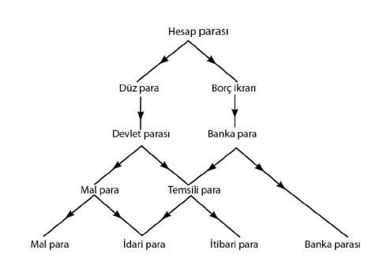
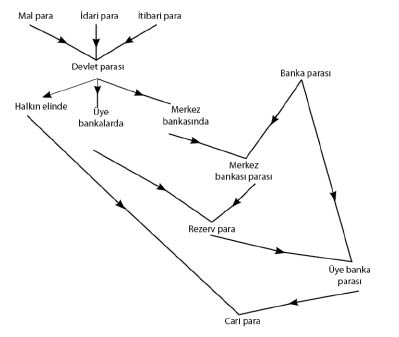
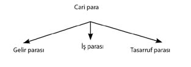

\1
I. Bölüm
Paranın Tasnifi
I. Para ve Hesap Parası
Para kuramının birincil kavramı, borçların, fiyatların ve genel satın alma gücünün ifade edildiği hesap parasıdır (money of account).
Bir hesap parası borçlarla, yani ödemesi ertelenmiş sözleşmelerle; ve fiyat listeleriyle, yani alıma veya satıma yönelik sözleşme teklifleriyle ortaya çıkar. Bu borçlar ve fiyat listeleri, ister kişiler arası doğrudan iletişimle, ister kâğıttan yahut fırınlanmış tabletten belgelerde muhasebe işlemi olarak kayda geçsin, sadece hesap parası ile ifade edilebilir.
Paranın kendisi, yani, teslimiyle borç sözleşmelerinin ve fiyat sözleşmelerinin ifa edildiği ve genel satın alma gücünün elde tutulduğu biçim, karakterini hesap parası ile ilişkisinden alır. Zira borçlar ve fiyatlar öncelikle hesap parası cinsinden ifade edilmek durumundadır. Alışverişte sadece uygun bir mübadele aracı olarak kullanılan bir şeyin para olmaya yaklaşması, genel satın alma gücünü temsil edebilmesine dayanır. Ama durum böyleyse, takas evresinden henüz çıkmışız demektir. Düz para (money proper) tam anlamıyla, ancak hesap parası ile ilişkisi içinde var olabilir.
Para ve hesap parası arasındaki ayrıma, ikincinin tanım yahut ad, ilkinin ise o tanımı karşılayan şey olduğunu söyleyerek açıklık getirebiliriz. Eğer aynı şey hep aynı tanıma karşılık gelseydi, ayrım pratik açıdan ilgiye değmezdi. Ama, tanım aynı kalırken şey değişebiliyorsa, bu durumda ayrım da büyük önem taşıyabilir. Fark, İngiltere kralı (her kim ise o kişi) ile Kral George arasındaki gibidir. Ödemesi İngiltere kralının kilosuna eşit ağırlıkta altınla yapılacak on yıllık bir sözleşme, ödemesi şimdiki Kral George’un kilosuna eşit ağırlıkta altınla yapılacak sözleşmeyle aynı değildir. Zira kimin İngiltere kralı olacağını duyurmak, zamanı geldiğinde, Devlete düşer.
Burada sözleşmelere ve tekliflere değinmekle –ve bunların zorlayıcı olmalarıyla–, kanundan veya âdetlerden bahis açmış oluyoruz; bu da esasen bahsi Devlete ya da topluluğa getirdik, demek olur. Dahası, parasal sözleşmelere özgü bir hususiyet de, sonuçta hesap parasıyla ifade edilen bir sözleşmenin ifasında, Devletin yahut topluluğun, sadece teslimi mecbur kılması değil, bir de neyin teslim edileceğine karar vermesidir. O nedenle Devlet, öncelikle, sözleşmede isime ya da tanıma uygun şeyin ödenmesini mecbur tutan kanuni otorite olarak devreye girer. Ancak, bir de, isime uyacak bu şeyin ne olacağını tayin ve beyan etmeyi, zaman zaman da beyanını değiştirme hakkını isteyerek devreye girer – ki o da kendi sözlüğünde değişiklik yapmak istediği zamandır. Bu hak, tüm modern Devletlerin talebidir ve en azından dört bin yıldır da böyle olagelmiştir. İşte, Knapp’ın çartalizmi –yani paranın Devlete özgü bir yaratış olduğu doktrini– paranın evriminde bu basamağa ulaşılmasıyla tam olarak gerçekleşir.
Böylece, insanlar hesap parasını benimser benimsemez, takas çağını para çağı izlemiştir. Çartalist ya da Devlet kökenli para çağına da, Devletin, hesap parasına karşılık gelecek şeyin ne olacağını açıklama hakkını –yani kitabı sadece uygulamayı değil, yazmayı da– istemesiyle ulaşılır. Bugün çağdaş paraların tümü, tartışmasız, çartalisttir.
Hesap parasının bir şartının süreklilik olduğu fark edilecektir. İsim değiştiğinde –karşılık gelen parada bir değişme olsun ya da olmasın– yeni birimin eskisiyle tanımlı bir ilişkisinin olması zorunludur. Devlet, kural olarak, yeni hesap parasını eskisi cinsinden tanımlayan formülü resmen ilan edecektir. Bununla birlikte, Devlet bu konuda gereğini yapmasa da, belli bir tarihten önceki tüm sözleşmeler eski para birimi üzerinden yürürken, o tarihi izleyen tüm sözleşmeler yenisi üzerinden yapılır, hatta piyasa ikisi arasında bir parite kuramasa bile bu böyle olur. Böylece, mevcut bütün sözleşmelerin bir anda yok olması gibi bir felaket dışında, hesap parasının şeceresindeki sürekliliğe ciddi bir halel gelemez.
II. Düz Para ve Banka Parası
Hesap parasının ortaya çıkışının iki kategori türettiğini gördük: Biri sözleşme teklifleri, sözleşmeler ve borcun ikrarı, diğeri de bunlara karşılık olan, yani teslimiyle sözleşmeyi yahut borcu ifa edecek olan paranın kendisi. Bunlardan ilki, bir sonraki gelişmeye, yani sözleşmelerin sona erdirilmesinde, çeşitli sebeplerle düz para yerine borç ikrarına (acknowledgments of debt) başvurmanın keşfedilmesine yol açar. Borçlanma bu şekilde kullanıldığında, banka parası olarak adlandırılabilir, tabii düz para (money proper) olmadığını akıldan çıkarmaksızın. Banka parası basit olarak bir kişiye özel borç ikrarıdır; hesap parası ile ifade edilir; sözleşmelerin sona erdirilmesinde düz paranın alternatifi olarak devredilmek suretiyle kullanılır. Böylelikle, Devlet parası veya düz para ile banka parası veya borç ikrarı kendi taraflarında yan yana gelirler.
III. Temsili Para
Bu, sırası gelince, Devlet parasının gelişiminde daha ileri bir evrenin yolunu açar. Banka parası artık, yukarıdaki tanımdaki gibi kişiye özel bir borcu değil, fakat Devlete ait bir borcu temsil edebilir. Bu durumda Devlet, yükümlülüklerin yerine getirilmesinde bizzat borcun da makbul olduğunu beyan etmek için çartalist imtiyazına başvurabilir. Böylelikle belli türde bir banka parası düz paraya dönüşür, bu düz para çeşitlerine temsili para diyebiliriz. Fakat, zamanında borç iken şimdi düz para olan şey karakterini de değiştirmiş olur ve artık borç olarak görülemez; zira borç, özü gereğince, kendinden farklı bir şey cinsinden yürürlüğe konulacaktır. Temsili parayı, nesnel bir standarda uyması hâlinde bile, borç olarak düşünmeye devam etmek hatalı çağrışımlar yaratır.
Hâlihazır kullanımına büsbütün uymamak pahasına da olsa, önerim, sırf kanunen geçerli parayı (legal tender) değil, ayrıca Devletin ya da merkez bankasının kendine yapılacak ödemelerde kabul etmeyi yahut kanuni para olarak mübadele etmeyi taahhüt ettiği parayı da, Devlet parası olarak görmektir.1 Dolayısıyla günümüz banknotlarının hepsi, hatta merkez bankası mevduatı da Devlet parası şeklinde tasnif edilirken, banka parası (yani kanunen geçerli olan dışındaki para) günümüzde esas itibarıyla üye banka mevduatından2 oluşur. Tarihsel açıdan temsili Devlet parasıyla ilgili pek çok örnek birtakım banka parasından gelmiş, Devletçe benimsenmeleri ölçüsünde bir kategoriden diğerine geçmişlerdir.
IV. Paranın Biçimleri
Artık yukarıda anlatılandan farklı bir şeyin, Devlet parasının alabileceği üç biçimin, yani kısaca “mal para”nın, “itibari para”nın ve “idari para”nın daha etraflıca çözümlemesine geçebiliriz. Bunlardan son ikisi “temsili para”nın alt türleridir.
Mal para (commodity money), paranın alışılageldik işlevlerine uygun olarak seçilmiş, tekelleşmemiş ve serbestçe edinilebilen, fakat arzı da –diğer mallar gibi– kıtlığına ve üretim maliyetine bağlı bir malın fiili birimlerinden3 oluşur.
İtibari para (fiat money), Devletçe yaratılıp tedavüle sokulan –ve ufak değerler dışında artık genellikle kâğıt olan– temsili (veya simgesel) paradır (yani malzeme olarak zati değeri, yazılı parasal değerinden başkadır). Kendinden başka bir şeye tahvil edilemez ve değeri nesnel bir standarda bağlı değildir.
İdari para (managed money), değeri –konvertibilite yahut başka türden– nesnel bir standarda bağlanacak şekilde, emisyon şartlarının idaresinin Devletçe üstlenilmesi dışında itibari paraya benzer.
Mal para ve idari para, nesnel bir standartla ilişkileri yönünden benzerlik gösterirler. İdari para ile itibari para ise temsili yahut kâğıt para olmaları yönünden benzerler ve Devlet pratiği ya da kanunlar dışında zati değerleri yoktur veya görece çok azdır.
Dolayısıyla idari para bir anlamda diğer ikisinin melezidir; hatta nitelikleri belki de bu yüzden kolayca anlaşılmaz. Halk, mal parayı bilir, itibari parayı da bilir; ancak biçimden ziyade standardı tanımaya yatkınlığı nedeniyle, alışık olduğu bir malı standart kabul eden idari parayı meta para, alışık olmadığı bir standarda sahip bir idari parayı ise kılık değiştirmiş bir itibari para olarak değerlendirme eğilimindedir. Hâlbuki en tipik modern paralar, gerçi hâlâ pek çoğu mal para ile idari paranın karması ise de, gitgide daha fazla idari paraya yaklaşmaktadır. Dahası, idari para, bir açıdan da paranın en genelleşmiş biçimidir, bir yanda idari otoritenin karşılık olarak nesnel standardı yüzde 100 oranında elde tutması hâlinde mal para hâline gelir, yani neticede depo makbuzu olup çıkar; diğer yanda ise nesnel standarttan yoksun kalması hâlinde itibari paraya dönüşür. Bütün bu sebeplerle, sonraki bölümlerde geliştirilecek olan kuram, öncelikle idari parayı referans alacaktır. Ancak, elde edilen formülleri kolaylıkla mal para veya itibari para ile ilgili özel koşulların gerektirdiği hâllere çevirmek mümkündür.
Yukarıda ortaya atılan biçimler ve kavramlar ile bunların birbirleriyle ilişkileri aşağıdaki diyagramla gösterilebilir:

Böylelikle elimizde, içlerinden üç tanesi düz para, dördüncüsü de borç ikrarı olan dört mübadele aracı kalmış oluyor.
V. Cari para
Para kuramının esas unsurlarından biri de halkın elindeki her türden paranın toplam miktarıdır. Sorguladığımız paranın Devlet parası mı yoksa banka parası mı olduğu genellikle ciddi bir fark yaratmaz. İkisinin toplamına cari para diyebiliriz. Dolaşımdaki para ile Devlet parası arasındaki ilişki izleyen satırlardaki gibidir.
Tipik bir modern bankacılık sistemi bir adet güneşten, yani merkez bankasından ve gezegenlerden, ya da Amerikan tabiriyle söylersek, üye bankalardan oluşur. Toplam Devlet parası stoğunun bir kısmı halkın, bir kısmı üye bankaların ve bir kısmı da merkez bankasının elindedir. Merkez bankasının elindeki Devlet parası mevduat karşılığı olan “rezerv”i oluşturur. Bu mevduata merkez bankası parası diyebiliriz. Merkez bankası parasının tümünün üye bankalarda tutulduğunu varsaymak yerindedir, halkın elinde tutulabilir olduğunca, bu, koşullara bağlı olarak, Devlet parası veya üye banka parası ile aynı zemindedir. İşte bu merkez bankası parasına ilave olarak üye bankaların tuttuğu Devlet parası, üye bankalardaki mevduat karşılığı olan rezervleri meydana getirir. Bu mevduat da halkın elindeki üye banka parasını oluşturur ki o da halkın elinde bulunan Devlet parası (ve varsa merkez bankası parası) ile beraber, cari paranın toplamını meydana getirir.
Böylece, bu ilişkileri sergilemek üzere soyağacımıza şu şekilde devam edebiliriz:

Son olarak da cari parayı üçüncü bölümde şu şekilde çözümleyeceğiz:

VI. Tarihten Örnekler
Bazı tarihsel örnekler, tezi tasvir etmeye yardımcı olacaktır. Düz paranın başlangıcı, tarihçilerce, hâlâ Herodot’un MÖ 6.-7. yüzyılda Lidya’da başladığına dair tespitinin güvenilirliğine dayanılarak, genellikle ilk sikke basımıyla birleştirilir. Ancak ben sikke basma işinin, öyle genelde atfedildiği gibi önemli bir etkisi olduğunu sanmıyorum. Belki temsili paraya yönelik ilk adım ya da öyle değilse bile, temsili paraya ve itibari paraya geçişleri kolaylaştıran bir adım olmuştur. Ama muhtemeldir ki esas geçiş, yani çartalist paraya yahut Devlet parasına geçiş, çok daha önceydi; tıpkı sonraki önemli adımın, yani temsili paraya geçişin çok sonra olması gibi.
Zira çartalizm, yahut hesap parasına uygun gelen nesnel standart, Devlet tarafından tayin edilince başlar. Temsili para, paranın nesnel standardından kopmasıyla başlar. İtibari para ise Devletin bir adım daha ileri gidip nesnel standardı terk etmesiyle ortaya çıkar. Sadece Devletin darp edebildiği ve yapıldığı malın değerinden yüksek değere sahip olabilen sikke, olsa olsa temsili para doğrultusunda bir ilk adımdır. Dolayısıyla, sikke basımı, paranın evrimindeki üç hayati yenilikten biri değildir ve zaten gerçek temsili para da, ilk sikke basımından yüzlerce yıl sonrasına kadar ihraç edilmemiştir. Kaldı ki Devletin standart tayin etmesinin, standart basması gerektiği anlamına gelmesi de, asla çartalizmin karakteristiği değildir; mal ve ağırlık standardını tayin eden Devlet olduğu sürece, paranın adet olarak değil ağırlığıyla geçmesi hâlinde bile, çartalizmin temel karakteristiği zaten mevcuttur.
Lidya krallarının ilk kez sikke dökmeleri, o dönem açısından vezin ve ayar ile ilgili bir çeşit sertifika ya da sadece Midas’ın komşularına ve Karun (Croesus) soyuna mahsus bir gösteriş gayreti olabilirdi. Maden parçalarına mühür basmak, sadece kendi yöresinde caka satma, kendini duyurma ya da yurtseverlik dışında önem taşımıyordu. Bazı önemli ticari sahalarda böyle bir uygulama asla gözlenememiştir. Mısır’da Batlamyus’tan önce sikke basılmamıştı; Çin’de (genel olarak) değer standardı olan gümüşten son dönemlere kadar hiç sikke basılmadı; Kartacalılar zoraki darpçılardı, dış faaliyetler için gerekmedikçe muhtemelen sikke basmıyorlardı. Paranın esas nitelikleri açısından güdüleri en keskin olan Sami halkları ise, sikke basımı konusunda Kuzey’in amatör bankerlerinin pek hoşlandığı aldatıcı belirtilere hiç itibar etmemişler, madenin sadece süs olmasıyla ve ağırlığıyla ilgilenmişlerdi. Dolayısıyla, talentin yahut şekelin basılması ille de gerekmiyordu. Bunların Devletçe yaratılan birimler olması yeterliydi, burada Devlet, gümüş talent yahut şekel cinsinden belirtilen bir borcu veya başka bir bedeli karşılamak için, yasalara göre, hangi vezin ve ayardaki gümüşün yeteceğini tanımlayan (ve tanımı keyfince değiştirme hakkına sahip) Devlet anlamındadır.
Vezin standardıyla ilgili elimizde kesin kayıtları olan ilk Devlet reformu, MÖ üçüncü bin yılın sonuna doğru Babil’deki reformdur. Fakat başlangıç o değildi. Daha eski standartlar vardı. İlkel dönemlerde insanoğlu, vezin kavramını veya teknik ölçüm düzenlerini geliştirmeden önce, henüz ölçüm yapmak için –tıpkı sonraları, 13. yüzyılda İngiliz hükümetinin bir sterlin peniyi “başağın ortasındakilerden 32 tohum” ağırlığında diye tanımlaması gibi– arpa, taş veya kabuk saymaya bağımlıyken, bir yahut iki ya da on gibi sayılarla ifade edilen bir yükümlülüğü ifa etmekte kullanılacak bir birimin, hangi tür yahut nitelikte olacağını belirleyen, yine Devlet veya toplum olabilirdi. Yerli geleneklerince keçinin standart olduğu günümüz Uganda’sından bir misyon görevlisi, resmi görevlerinden birinin, borç ihtilaflarında, bir borç ödemesi olarak verilen keçinin standarda göre çok yaşlı veya sıska olup olmadığına hükmetmek olduğundan söz etmişti bana.
Para, uygarlığın diğer ayrılmaz unsurları gibi, birkaç yıl öncesine kadar sanılana kıyasla, daha uzun geçmişi olan bir kurumdur. Kökeni, buzullar erirken sislere karışmıştır, hatta insanlık tarihinin buzul çağları arasında geçen, havanın lâtif ve aklın yeni fikirlere gebe kalmaya açık olduğu –Hesperidlerin adaları, Atlantis veya Orta Asya Cenneti türünden– mutluluk dönemlerine kadar uzanabilir.
MÖ 6. yüzyıl Atina’sındaki Solon para reformu, çartalist bir ayrıcalık girişimiydi ve sikke basımıyla çağdaş olmakla beraber ondan tamamen bağımsızdı. Sadece bir standart değişikliğiydi. Tabii eğer ikinci Pön Savaşı’ndan önce halk zararına Devlete fayda sağlayacak şekilde geliştirilmiş, çartalist bir standart değişikliği olduysa, onu da ben bilmiyorum, Roma bu enstrümanı devlet yönetimi cephaneliğine ilk ekleyendir. O zamandan başlayarak, genelde paranın tağşişi (kıymetli maden ayarının düşürülmesi) şeklinde, bazen şu bazen de bu amaçla başvurulan çartalist standart değişikliği, tarihçilerin malumudur.
Ancak, böyle standart değişiklikleri paranın biçimini etkileseler de, bizi mal para aşamasının ötesine geçirmez. Standardın tağşişi, yani hesap parasının değerinde ani düşüşe yol açan bir standart değişikliği, bizi temsili paraya bir adım yaklaştırmaz. Mal para, sırf mal biriminde miktar kaybı ya da tür değişikliği oldu diye ortadan kalkmaz. Uzun zaman geçtikten sonra paranın temsili yahut simgesel olmasına dair ciddi bir bulgu yoktur. Bir sikke, prestijinden ve uygunluğundan dolayı, yahut mührünün ayar ve kabul edilirlik garantisi olması nedeniyle ya da sadece estetik yönüyle –ki günümüzde Maria Theresa dolarının Afrika Araplarına kendini kabul ettirmesi böyledir– maden içeriğinin az üstünde bir değere sahip olmuş olabilir. Yine, basım hizmetinden doğan bir senyoraj taşıması da mümkündür. Çok küçük para birimleri için sikkeler bulunuyordu. Kırpık veya yıpranmış para, yazılı değeri üzerinden halkın elinde tedavülde kalabiliyordu. Ancak böyle örneklerin nitelikleri, kelimenin tam anlamıyla temsili para olmalarına yetmez. Temsili parayla mal para arasındaki gerçek bağlantı, muhtemelen, arzı üretim maliyetinden ziyade mutlak kıtlığıyla sınırlı olan ve talebi de para malzemesinin tamamen kanun yahut gelenek ile seçilmiş olmasına dayanan ve başka kullanımlarındaki zati değerine bağlı olmayan mal parada bulunur, örneğin Mikronezya’daki ilkel taş paralar böyledir.
Eski zamanlarda Çin’de kullanıldığı söylenenleri ve John Law ile diğer öncellerine ait kâğıt paraları bir yana bırakırsak, temsili paranın tarihsel önemi, oldukça yakın bir çağa, baskılayıcı sonuçlarıyla sadece temsili paranın değil, itibari paranın da kabulüne yol açarak, izleyen yıllar içinde Fransa’yı ve İngiltere’yi dünyanın lider finansal merkezleri yapan Fransız Devrimine uzanır.
Bununla birlikte temsili para, görmüş olduğumuz gibi, henüz nispeten modern bir gereç olduğu sırada, Devletçe çok eski bir özel finans düzeneğinden, yani banka parasından devşirilmişti. Banka parasının çartalist para türünden uzak kökenleri mazide kaybolmuştur. Aslında banka parası, özellikle ödeme emirleri ve yurt dışı gezginlerin kredi mektupları formunda, belki de düz para kadar, uzun zamandır mevcuttu. Zira, bir sözleşmenin kapatılması yönünden pek çok durumda, banka parasının dayandığı tek şey, borcun devrinin de, en az, ifade edildiği paranın devri kadar işlevsel olduğunun anlaşılmasıdır. Borcun sahipliği, bir noktada, paranın da sahipliğidir. Ayrıca borcun hızla paraya çevrilmesine duyulan güven yönünden, banka parasının sözleşmeleri kapatmaktaki işlevselliği ile uzaklık unsuru arasında bir ilişki yoktur. Sözleşmeleri uzaktan kapatma açısından, ödeme emri şeklindeki banka parası, düz parayı nakletmenin risk ve maliyetine kıyasla transfer maliyetinin düşüklüğü sayesinde, eski çağlarda da bugünkünden daha az yararlı ve gerekli değildi.
VII. İdari Paranın Evrimi
Benim idari para adını verdiğim temsili para çeşidi, diyagramda da görüldüğü gibi, en karma türdür ve dört biçim arasında sadece onun diğer üçüyle ilişkisi vardır. Kolay aşamalardan geçerek ortaya çıkmıştır. Mevcut para sistemlerinin çoğu hâlâ bileşik karakterdedir ve kısmen idari paradan, kısmen de mal paradan oluşur.
İdari paranın yönetimiyle ilgili bilimsel prensipleri ortaya koymaya yönelik ilk önemli girişim, şu ya da bu olsun belli bir standarda uydurmak amacıyla, neticesi 1844’teki İngiliz Banka Sözleşmesi Kanunu [British Bank Charter Act] olan tartışmadan doğmuştu. 18. yy.’da hâlâ mal para egemendi. Ancak banka parasının banknot şekline evrimi, temsili paraya giden yolu gösteriyordu.4 Fransız Devriminin sonuçları, Fransız ve İngiliz paralarının dosdoğru itibari paraya dönüşmesine sebep oldu. İngiltere’de altın standardına geçilmesiyle bu aşamanın sonuna gelindiği sırada, temsili paranın kullanılışı halka o kadar tanıdık ve uygun gelmiş, Hazine ve İngiltere Bankası (Bank of England) tarafından öylesine kârlı bulunmuştu ki yeni sistem saf bir mal para sisteminden ziyade, karma bir idari para sistemi olmuştu. Oysa, zamanında Ricardo külçe teklifleri konusunda amacına ulaşabilmiş olsaydı, mal para asla yeniden tesis edilmeyecek, 1819 İngiltere’sinde katıksız bir idari para sistemi yürürlüğe girmiş olacaktı.
İdari para o tarihten itibaren yürürlüğe girmişti ama para yönetiminin metotları ve ilkeleri, sorumlularınca, yani İngiltere Bankasının guvernörleri ve idare heyeti tarafından doğru anlaşılmamıştı, aslında hiç anlaşılmamıştı denilse yeridir. O günün reformcularının idare yöntemlerinde yeni bir çağ açtığı 1844 tarihli Kanun’a kadar geçen 25 sıkıntılı yılda, izlenen standart çökmeye yüz tutmuştu. Bu Kanun, sağlam bir ilkenin ciddi bir kafa karışıklığıyla bileşimiydi. Sağlam ilke, standardı koruma amacıyla temsili para miktarının sınırlanmasına yapılan vurgudadır. Kafa karışıklığı ise banka parasının ve buna bağlı olarak para ile banka kredileri arasındaki ilişkilerin varlığını göz ardı etmeye ve temsili parayı mal parayla aynı şekilde yürütmeye yönelik boş çabada yatar. Aslında bu karışıklık öylesine ciddiydi ki, bir diğer ilke, yani, Kanun’da öngörülmeyen fakat zamanın en iş bilir finansçılarının aklına düşen banka haddi ilkesi olmasaydı, fiili bir çöküntüye yol açması muhtemeldi. Banka haddi, etkililiğiyle, idari paranın yönetimi açısından hem müthiş bir keşif, hem de çarpıcı bir yenilik idi, daha birkaç yıl öncesine kadar İngiltere Bankası, standardın sürdürülmesiyle banka haddi politikası arasındaki bağlantı hakkında en ufak bir bilgiye sahip değildi.
Banka haddi politikasının tedrici evrimi, Londra’da, özellikle ona adapte olmuş koşullara bağlı olarak, banka parasının muazzam büyümesi eşliğinde, izleyen yetmiş yılda İngiliz parasal gelişiminin karakterini belirlemiştir. Ancak, banka haddinin pratik yararı, bir yandan sadece alışılageldik olmakla kalmayıp iman ve dogma malzemesi hâline de gelmiş iken, aynı zamanda, kesin modus operandisi ve farklı koşullardaki uygulanışından beklenen sonuçların farklılığı da pek o kadar anlaşılmamıştı, hatta benim kanaatimce, şu zamana kadar da hâlâ yeterince anlaşılmış değildir.
Bu arada idari paranın başka çeşitleri, en çok da döviz standardı (exchange standard) başlığı altında değerlendirdiklerimiz rağbet görmeye başlıyordu. Bunun klasik örneklerinden biri Hint rupisi idi, Hint rupisi bu yönetim metoduyla ilgili olarak hem başlıca teorik değerlendirmelerin, hem de büyük ölçekli fiili uygulamaların konusudur. Birkaç yıl önce (1913’teki Indian Currency and Finance çalışmamda) [JMK, vol.1] döviz standardı konusunda etraflıca yazmıştım. Yine de, böyle bir standardın gereğince tasnifine ilişkin görüşlerimi sunmak için bir parantez açabilirim.
Bence, konuyla ilgili birtakım tartışmalarda döviz standardı ve –daha doğru ifadesiyle– döviz idaresi arasında bir belirsizlik var. Ben, döviz standardını, nesnel standardı başka bir ülkenin kanuni parası olan bir güdümlü temsili para (managed representative money) olarak tanımlıyorum. Hint rupisinin sterline mi, yoksa altına mı bağlanması gerektiğiyle ilgili tartışma, rupinin döviz standardı olup olmamasıyla ilgili bir tartışmaydı. Alman markının istikrara kavuşturulması sürecindeki geçiş standartlarından biri döviz standardı idi, oysa sonunda markın gelip durduğu yer altın standardı oldu. Öte yandan, nesnel standardın yabancı bir para değil de (örneğin) altın olduğu, fakat buna rağmen para idaresi yöntemi gereğince, bütünüyle veya genel hatlarıyla, yabancı merkezlerde o standarda uygun rezerv bulundurulduğu ve açıklanan fiyattan spot piyasada altın alım-satımından ziyade, açıklanan kurdan döviz alım-satımının yapıldığı bir durum, tam da benim döviz idaresi dediğim şeydir. Döviz yönetimince hedeflenen nesnel standardın döviz standardı olması mümkündür, ancak zorunlu değildir. Döviz idaresinde paranın karakteri, standardından değil biçiminden gelir.
Komşularına kıyasla küçük olan, yahut uluslararası önemde bağımsız finansal merkezleri olmayan ülkeler için, döviz standardı ideal olabilir. Ancak bu durum, parası döviz standardının temeli olarak seçilen ülkeye belli ölçüde bağımlılığa neden olacaktır ki bu da ulusal gurur açısından incitici olabilir. Oysa, bu itirazı kısmen bertaraf eden döviz idaresi, altın külçelerinin naklinden tasarruf ve faiz kaybından kaçınma gibi ciddi teknik avantajlara sahiptir. Pek çok ülke, örneğin Japonya, bu şekilde, birden fazla dış merkezde rezerv bulundurarak ve her merkezin payını gereğince ayarlayarak, uzun yıllardır büyük avantajlar sağlamaktadır. Nitekim Almanya, bazı Reichsbank otoritelerinin karşıt eğilimlerine ilişkin işaretler olmakla birlikte, döviz idaresine yöneliyor gibidir. Hint kamuoyunda bazı çevrelerin döviz idaresine yönelik ön yargılı karşı çıkışı, bence biraz da döviz idaresiyle döviz standardının birbirine karışması nedeniyle, asıl ikincisine has olan bağımlılık unsurunun, hatalı olarak aynı derecede ilkine yakıştırılmasından kaynaklanmaktadır.
Sterlin, savaş süresince ya da 1915’ten 1919’a kadar döviz yönetimine bir örnek idi. Sterlin değerinin 4,76 1/2 ABD doları civarında kaldığı 13 Ocak 1916’dan 19 Mart 1919’a kadar, Messrs J.P. Morgan and Co., İngiliz Hazinesinin muhabiri olarak New York döviz piyasasında bu kurdan sunulan her miktarda sterlini almak, yahut tersi yönde, 4,77 kurundan5 dolar almak için hazır bekliyordu.
İtibari paranın –ki sabit nesnel standardı yoktur– uygulandığı durumlarda genellikle döviz yönetimi benimsenmişti. Bunun en bilinen örnekleri, zaman zaman değişkenlik göstermekle birlikte, Avrupa’da paraların çöktüğü savaş sonrası dönemde, döviz kurlarında “resmi destek” ve “bağlama” (“pegging”) olan durumlardır.
Nihayet, savaştan hemen önce, dünyanın daha önce hiç görmediği en müthiş idari sistem –başlangıcı itibarıyla İngiliz sisteminden esinlenilen fakat sonra kendi yeni ve özgün hatlarını geliştiren Birleşik Devletler’in Federal Rezerv Sistemi– ortaya çıkmıştı. Ne var ki bu hatların neler olması gerektiği, henüz tartışmalı ve kuşkulu bir konudur elbette.
İngiliz sistemiyle ilgili olarak, doğuşundaki biçimi içinde, 1925 Para Kanunu (Currency Act of 1925) temelinde, itibari parayla birkaç yıl geçmesini beklemeden konuşmak için, vakit henüz çok erkendir. Bununla birlikte, Kanun çok belirgin bir değişikliği içerir: İngiliz parası artık bileşik bir sistem değildir. Savaş öncesinin altın sikke biçimli mal parası yeniden canlandırılmamış; Ricardo’nun yüz yıl önceki önerileri benimsenmiş; sterlinin saf bir idari para olduğu kanunen tespit edilmiştir.
Pek çok kimse Büyük Britanya’da altın standardının restorasyonundan önceki tartışmanın, sterlin idari para mı, yoksa “otomatik” para mı olacak meselesi olduğunu sanıyordu. Ama bu yanlış bir anlayıştı. “Otomatik” para, “mal” paranın arzına, miktar yönünden katı şekilde bağlı bir para demek değilse, hiçbir şey demek değildir; zaten bununla ilgili bir imkân ve ihtimal yoktu. Söz konusu yanlış anlayışın kaynağı, halkın savaş sonrası dönemin itibari parası ile modern öncesi döneme ait mal paradan başka bir seçenek bilmemesiydi. Oysa, diğer meselelerle ilgili varılan kararlar her ne olursa olsun, benimsenmesi gereken de tam olarak bu üçüncü seçenekti, yani, nesnel bir standarda uyacak şekilde idare edilen bir temsili para.
Asıl tartışılan konular iki taneydi. Bir; geçişin, parasal gelir düzeylerinde ciddi ölçüde değiştirebileceği bir anda veya şekilde, sterlinin standardını değiştirmek isabetli miydi? Standart değişikliğinin, geçiş süresi içinde yeni standardın satın alma gücü hem mevcut hesap parasının satın alma gücüne eşit, hem de parasal gelirlerle dengeli olarak ve parasal değerlerin cari düzeyini aşağı ya da yukarı oynatmayacak şekilde, o anda ve kendi içinde yapılması gerekmez miydi? Resmi görüşe nazaran bu eleştiriden çok etkilenen muhalefet, parasal değerlerin kasten düşürülmesine itiraz ederek, böyle bir düşüşü zorunlu kılacak koşullar öne sürerken standardı değiştirmenin isabetsiz olduğunu savunuyordu. Ancak resmi görüş, hesap parasının karşılığı olarak altının kuyumcu ölçekli hassas ayarını çok önemsiyordu. Ne bu ayarı mevcut hesap parasına adapte etmeye, ne de hesap parasının satın alma gücünün istenilen ayara adapte olmasını beklemeye niyetliydiler; buna karşılık, çeşitli sebeplerle, mevcut gelir ve fiyat düzeylerinde zorla yahut aniden meydana gelen dengesizliklerin yol açacağı kesin riskleri göze almayı tercih ediyorlardı.
Bu çekişme, standardın seçimiyle, yani altının en uygun nesnel standart olup olmamasıyla ilgili sonraki tartışma konusundan bir hayli farklıydı. Parasal reformcular olarak bilinenler, itibari para döneminin son bulmasından en az diğerleri kadar kaygılı idiler; nitekim, istikrarlı bir nesnel standardın önemine karşıtlarından çok daha fazla dikkat çekiyorlardı. Bununla birlikte altının, eskisine kıyasla daha az olmakla birlikte, tatminkâr bir nesnel standardın niteliklerine şimdi sahip olduğunu ileri sürüyorlar ve onun yerine geçmek üzere, iktisat metinlerinin epeydir aşina olduğu “tablo standardı”nın genel çizgileri doğrultusunda bir bileşik temsili mal öneriyorlardı.
1 Muhtelif paraların kesin kanuni statüleri çeşitlilik göstermeye yatkındır. Örneğin, Birleşik Devletler Merkez Bankasının banknotları “opsiyonel” paradan başka bir şey değildir. Knapp, kanunen geçerli para olduğu belirtilmiş olsun veya olmasın, Devletin kendi ödeme noktalarında almayı taahhüt ettiği her şeyi –bence haklı olarak– “para” diye niteler.
2 Terimin açıklaması aşağıdadır (bkz. s. 9)
3 Yahut malın fiili birimlerine karşılık gelen depo makbuzundan oluşur.
4 18. yy.’ın ortaları itibarıyla banknot tedavülü İskoçya’da başat hale gelmiş bulunuyordu. Yakın Asya’da değerli madeni elde bulundurmanın göz alıcı emniyetine karşılık, Kuzey Britanya’da değerli madeni elde bulundurmamanın göz alıcı ekonomileri karakteristik bir cazibe taşıyordu.
5 Döviz idaresi 1915 Ağustosunda başladı, ama 13 Ocak 1916’ya kadar döviz “tespit” edilmedi. Bu tarihten itibaren kur 4,76 1/2 ile 4,77 arasında korundu. 1916 Mayısından sonra da dalgalanma 4,76 7/16-4,76 9/16 arasında tutuldu.